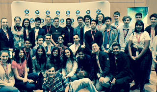

Technology
As I have commenced the BIT Program at UTS, I will engage in two internship opportunities in the near future. I hope to participate in internships at startups or pure technology companies, as I have already engaged in the corporate experience and have realised that it is not the best use of my time. Instead, I hope to assist new businesses in getting off the ground with appropriate technological solutions, and creating real innovation through developments which help people.

Education
Currently, I teach at two educational institutions, along with running my own voluntary private tuition service for students in need. I hope to build on the work I’ve done so far, and continue giving back and teaching more students as the years progress. I enjoy teaching as I believe the gift of education is the primary tool needed to break poverty and inequality, and the students I teach tend to enjoy themselves throughout my lessons.
Currently, I teach at two educational institutions, along with running my own voluntary private tuition service for students in need. I hope to build on the work I’ve done so far, and continue giving back and teaching more students as the years progress. I enjoy teaching as I believe the gift of education is the primary tool needed to break poverty and inequality, and the students I teach tend to enjoy themselves throughout my lessons.
Edify Australia
As of late 2018, I have been one of the three co-founders for Edify Australia, a Not For Profit educational organisation which aims to bring personalised education to school students in a way never done before. Rather than supplementing the school system, Edify will assist educational institutions to develop engaged students who have an in-depth understanding of their content. In its current form, we aim to counteract the prevalence of the lucrative but unregulated coaching college market in South-West Sydney. Over the long term, we hope that our experience in the education sector gives us a platform to build a AI system capable of understanding the specific needs and academic deficiencies in students, and providing them content to study and appropriate exercises accordingly.
As of late 2018, I have been one of the three co-founders for Edify Australia, a Not For Profit educational organisation which aims to bring personalised education to school students in a way never done before. Rather than supplementing the school system, Edify will assist educational institutions to develop engaged students who have an in-depth understanding of their content. In its current form, we aim to counteract the prevalence of the lucrative but unregulated coaching college market in South-West Sydney. Over the long term, we hope that our experience in the education sector gives us a platform to build a AI system capable of understanding the specific needs and academic deficiencies in students, and providing them content to study and appropriate exercises accordingly.